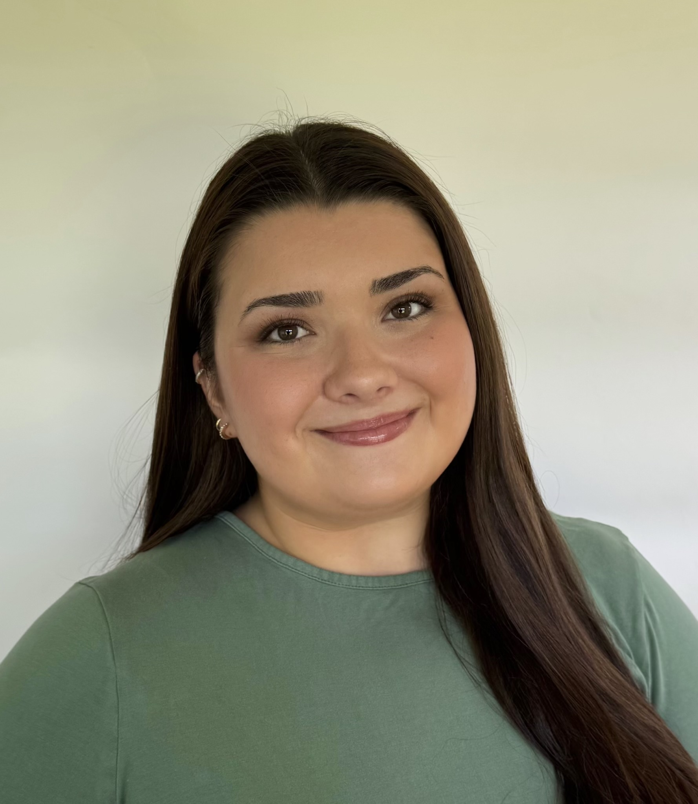

Journalism Student
Taylor Ramirez is a Master of Journalism student at the University of Maryland's Philip Merrill College of Journalism. She is also a Howard Fellow in the Howard center for Investigative Journalism. She has written about political news and research, developed and managed marketing campaigns, and has learned to translate complex policy issues into engaging, accessible social media content. Through her work, Taylor has developed a strong interest in the intersection of journalism, politics, and digital media. After graduation, Taylor hopes to build a career strengthening the reliability of journalism through social media and creating space for a new generation to understand and engage with political news in an evolving media landscape.
I developed strategic internal and external social media content across multiple platforms. I developed and executed marketing campaigns focused on internal news, current political events and relevant policies to engage and inform special interest groups.
I created internal media performance reports for stakeholders providing information on relevant news and media coverage that impacted the school’s public image. I wrote and edited content for newsletters, websites and social media platforms maintaining alignment with university standards. I collaborated with colleagues to create digital media content and various collateral communications materials.